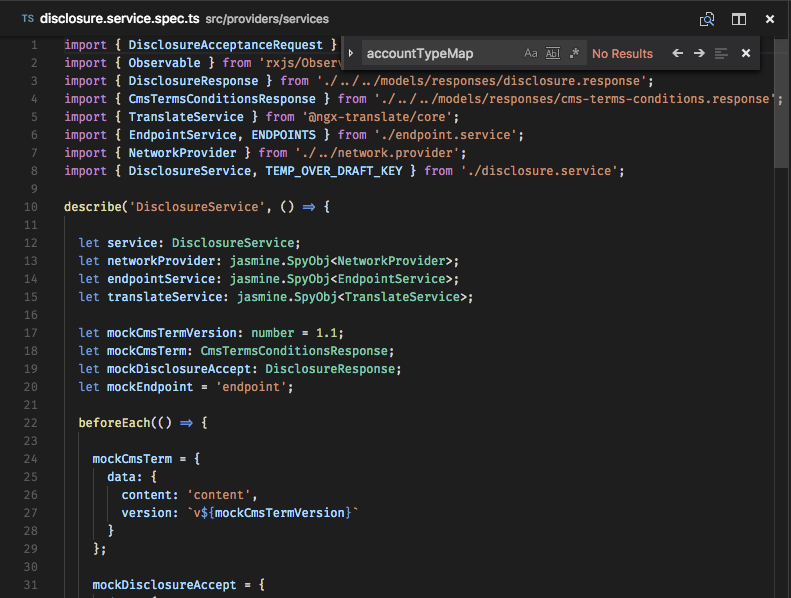
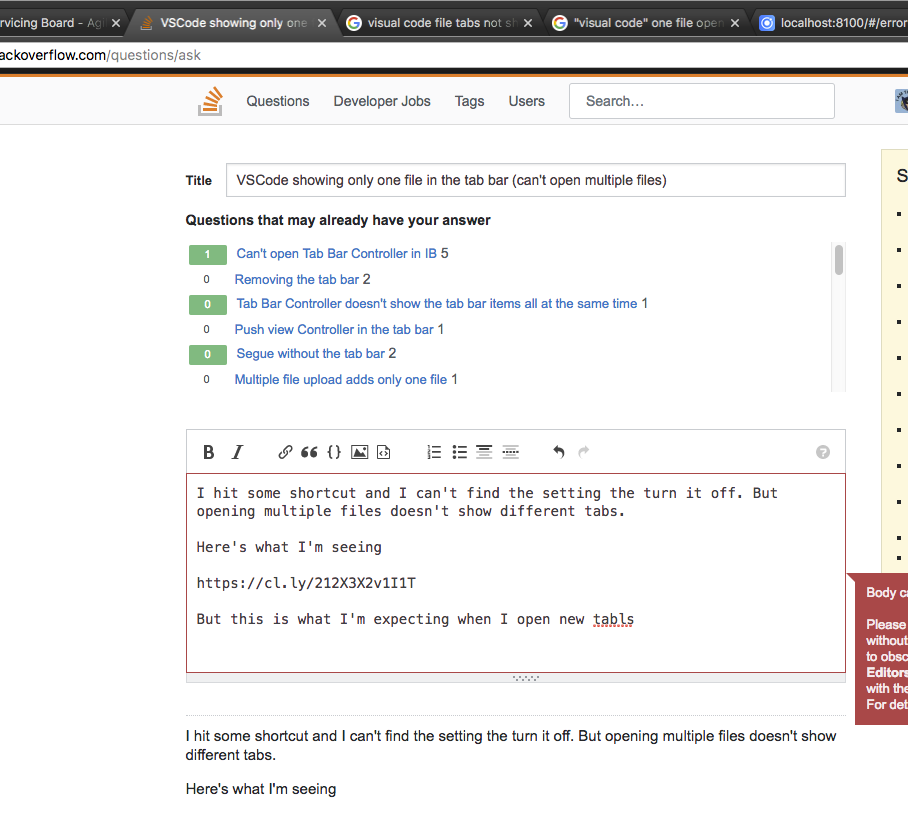

VSCode showing only one file in the tab bar (can't open multiple files)
I hit some shortcut and I can't find the setting the turn it off. But opening multiple files doesn't show different tabs.
Here's what I'm seeing

But this is what I'm expecting when I open a new tab

Answer
Check User interface / Tabs. You just need to add the following line in the configuration file.
"workbench.editor.showTabs": false
I also think that How do I disable tabs in Visual Studio Code? is asking the exact opposite of what you are asking.
Suggest
On a mac, if both of the existing answers didn't work, you can try command + ctrl + w, worked for me.